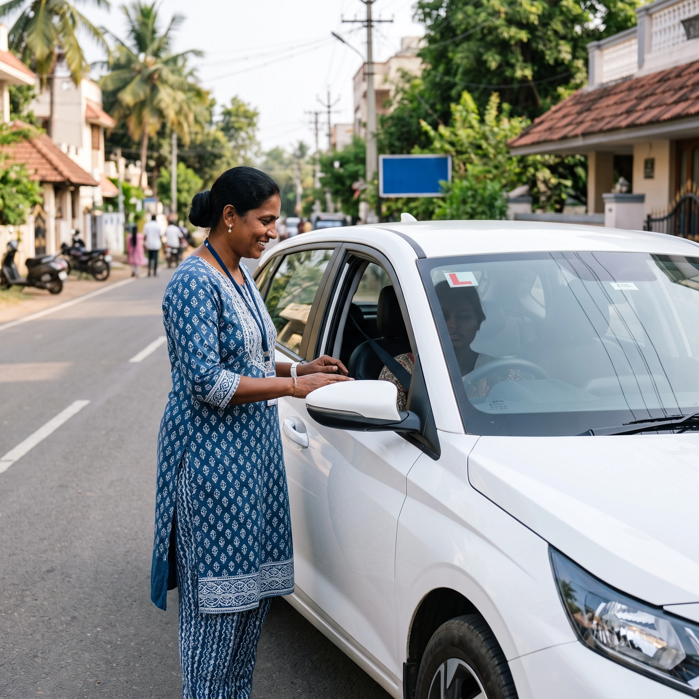

Never driven before
You want to learn car driving in Malleswaram from absolute zero. We start with seat, mirrors, clutch and steering in a quiet area.
- Controls & gears
- Slow-speed practice
Learn Gaadi is a driving school in Malleswaram for first-time learners, women who want a calm start, and professionals heading for a commercial licence. Learn on a car, bike or scooty, or train for LMV and HMV, with the RTO paperwork handled alongside your lessons.
How a lesson in Malleswaram progresses
>>> ABOUT US <<<
Malleswaram is one of the older, more settled parts of Bangalore, which means narrow residential lanes, busy markets, temple-day crowds and a steady flow of two-wheelers. Choosing among the driving schools in Malleswaram is really about finding one that trains you for this kind of road, not only for the RTO test.
As a driving school in Malleswaram, Learn Gaadi plans every course around one learner. Your driving classes in Malleswaram begin where you are, whether you have never held a steering wheel or you simply lost confidence after a long break.
Families searching for a driving school Malleswaram residents can rely on, or a driving school in Malleshwaram for a college-going child, usually want the same things: a patient trainer, honest guidance and clear timings.
You are not passed between instructors, so progress is tracked lesson to lesson.
Early-morning, evening and weekend slots for students and working professionals.
Choose a package that covers the learning licence and test, or training only.
>>> CAR TRAINING <<<
Our car driving classes in Malleswaram are built around three starting points. Pick the one closest to you and we adjust the lesson plan as you improve. This is car driving training in Malleswaram that fits the learner, not a fixed syllabus.
You want to learn car driving in Malleswaram from absolute zero. We start with seat, mirrors, clutch and steering in a quiet area.
You know the basics but freeze in traffic. We rebuild your confidence with reversing, parking and lane discipline.
Returning after a break, moving to an automatic, or preparing for highway and night driving.
Good to know: every session runs in a dual-control car, so your instructor can step in at any moment. If you want a car driving school in Malleswaram with flexible timings, ask for a morning or after-work batch.
Book Car Lessons>>> TWO-WHEELER TRAINING <<<
Two-wheelers are the quickest way through Malleswaram's lanes, so balance and braking come first. Our bike driving school in Malleswaram teaches you to ride safely before you join main-road traffic.
As a two wheeler driving school in Malleswaram, we train both geared bikes and gearless scooters. Many learners ask for scooty driving classes in Malleswaram, and these are a good first step if you have never ridden at all. Our bike driving classes in Malleswaram run in short, regular sessions to build muscle memory.
Enquire for Bike Training>>> PROFESSIONAL DRIVING <<<
Driving can also be a career. If you are looking for a heavy vehicle driving school in Malleswaram, or want to start with commercial driving training in Malleswaram, this is how the licence classes line up.
Light motor vehicle training for cars, jeeps and light commercial vehicles, from the basics to confident city driving.
Start hereHeavy motor vehicle practice for trucks and goods carriers, with focus on load awareness, gear control and turning radius.
Career routeBlind spots, braking distance, wide turns and passenger safety, for drivers aiming at transport jobs.
Passenger transportPractical, route-based driving for those who plan to drive a cab or auto for a living.
Quick start
>>> WOMEN LEARNERS <<<
Many women delay learning because they fear being judged or do not know who will sit beside them. Our ladies driving school in Malleswaram is designed to take both worries away. Ask for a female driving instructor in Malleswaram when you book, and we will arrange it.
Our driving classes for ladies in Malleswaram are slower, quieter and entirely at your pace, whether you are a homemaker, a student or a working professional.
>>> COURSES & PRICING <<<
The driving school fees in Malleswaram depend on the vehicle, the number of sessions and whether you want licence help bundled in. Driving classes fees in Malleswaram differ between a first-time beginner and someone who only needs a refresher, so we quote after a short call instead of showing a one-size-fits-all number.
If you are comparing the best driving school in Malleswaram, ask each one for a written quote and check what is covered. We aim to be an affordable driving school in Malleswaram by keeping the plan honest: you pay for the lessons you actually need.
>>> LICENCE SUPPORT <<<
A good RTO driving school in Malleswaram does not leave you alone with forms and slot bookings. We give driving licence assistance in Malleswaram from the first application to test day, so each step feels clear.
We help you prepare for the learner's test and check your documents, so your learning licence in Malleswaram goes through smoothly.
You train with us during the learner period and build the control, observation and signalling the examiner looks for.
We rehearse the test manoeuvres and explain what to carry, so your driving test in Malleswaram feels familiar.
After you pass, we guide you through the remaining steps until your driving licence in Malleswaram is issued.
Requirements can change, so apply through official channels and carry your originals. We confirm the current checklist and the RTO that covers your address when you enquire.
Get Licence Help>>> WHERE WE TRAIN <<<
Tell us your locality when you enquire and we will plan pickup and practice routes around it. Learners usually join us from Malleswaram and the neighbourhoods around it.
Message us on WhatsApp with the vehicle you want to learn and your locality. We will reply with timings and the next steps.
>>> FAQ <<<
You can train on a car (manual or automatic), bike, scooter or scooty, and also prepare for LMV and HMV licences. Tell us which one you want and we will plan the course.
Yes. Women learners can ask for a lady instructor when they book. Please mention it in your enquiry so we can arrange it.
The fee depends on the vehicle, the number of sessions and whether licence assistance is included. Call or WhatsApp us and we will share the exact amount for your course.
Yes. Our licence packages cover guidance on the learning licence, test preparation and support up to your driving test. Government fees are paid separately.
Absolutely. Most of our learners have never touched a steering wheel or handlebar. We start from the very basics and move at your pace.
Yes. We offer early-morning, evening and weekend batches, so working professionals and students can learn without missing work or classes.